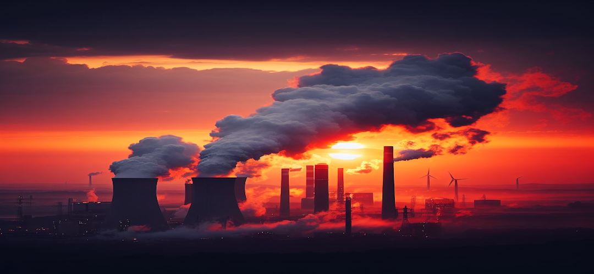

Mapping Carbon Footprints: A Comparative Analysis of CO2 Emissions by State and Industry in Australia

Overview of Carbon Emissions in Australia
Australia's carbon emissions have been a topic of global concern. As we strive for a sustainable future, tracking our carbon footprint becomes crucial. The provided charts offer an insight into the carbon emissions of different Australian states, helping us identify areas of concern and potential improvements.
CO2 Emissions Per Capitia For Australian States 2000 and 2020
20002020
The map visualization of CO2 emissions per capita for Australian states indicates a significant difference in carbon footprints across regions. It's evident that there has been a shift in emission patterns from 2000 to 2020.
Northern Territory consistently stands out with higher emissions per capita in both years however they have reduced the per capita emission value to almost 50% of its orignal value. While all other states have reduced their emissions as well.
Emissions Trend from 1990 to 2020
Over the past three decades, there's been a notable variance in emission trends among the states. The introduction of the 'Renewable Energy (Electricity) Act' in 2000 seem to have influenced these trends, indicating policy-driven changes.While most states did not show an immediate decline after the act in 2000, Tasmania% and Nothern Territory showed a sharp decline in emissions the following years. The more significant changes can be seen after the intriduction of the 'Clean Energy Act' in 2011.New South Wales, Victoria, Queensland and Australian Capital Territory showed declines after the introduction of the acts.
The visualization offers a detailed view of CO2 emissions across various states in Australia, utilizing both box plots and points to emphasize the data spread and outliers for each state over the years. Some states, particularly Queensland and New South Wales, display high emission levels, peaking at around 200,000 (kt CO2-e). In contrast, regions like the Australian Capital Territory and Northern Territory show considerably lower emissions. Remarkably, both Victoria and New South Wales, among Australia's most populous states, recorded their lowest emissions in 2020, the latest year in the data set.
Change in Sector Emissions
The presented visualization showcases the Change in Sector Emissions over a span of two decades: from 2000 to 2020. It's evident that the Energy sector leads in emissions, with a substantial increase over the years, reaching nearly 450,000 (kt CO2-e) in 2020. While sectors like Agriculture and Industrial Processes have shown some fluctuations, Land Use and Waste seem to have controlled their emissions, displaying a decline in 2020 compared to 2000. This visualization offers a snapshot of Australia's efforts across sectors to manage and potentially reduce CO2 emissions.
Overview of Carbon Emissions in Victoria
The carbon footprint of Victoria is under close scrutiny as we navigate towards a greener future. Monitoring these emissions is vital. The charts presented shed light on Victoria's emission trends, spotlighting challenges and avenues for progress.
Emissions by Sector in 2020 Comparitive to Other States
The visualization sheds light on the emissions by sector in 2020 across various Australian states. A striking detail is Queensland's pronounced energy emissions, which is especially significant considering its population is lower than that of Victoria. This contrast underscores the complexity of emission sources and suggests that factors beyond just population, such as industrial practices and energy sources, play a crucial role. These findings stress the need for region-specific strategies in Australia's journey towards sustainability.
Sector Emissions Trend from 1990 to 2020
The stacked bar chart offers insights into sector-wise carbon emissions over time. The Energy sector dominates the emissions, indicating a heavy reliance on fossil fuels. The impacts of significant policies, like the 'Clean Energy Act' in 2011, are visible with a shift in emissions post-implementation. This emphasizes the potential of regulatory measures in driving sustainable practices across sectors. The chart also shows a significant decline overtime in most sectors apart from Transport and Industrial Process.
Victoria Energy Usage Emissions 2020 Breakdown
The donut chart vividly displays Victoria's Fuel Usage Emissions for 2020. Predominantly, the Energy industries take the largest share, underscoring Victoria's substantial reliance on traditional energy sources. Interestingly, while Fugitive emissions from fuels is often a major contributor to emissions globally, its segment here is noticeably smaller. Transport and Manufacturing industries also occupy significant portions. On the other hand, Other sectors contribute the least, hinting at successful emissions reduction in those areas. As Victoria steers its course towards a greener future, understanding such emission breakdowns becomes paramount in devising effective policies and strategies.
Victoria Land Usage Emissions 2020 Breakdown
The vertical bar chart offers a detailed view of emissions from different land use categories. The negative emissions from Forest Land are a testament to the crucial role forests play in acting as carbon sinks. However, deforestation poses a concerning environmental challenge, as it contributes positively to emissions. The data underscores the importance of preserving forest lands and regulating activities that lead to deforestation.